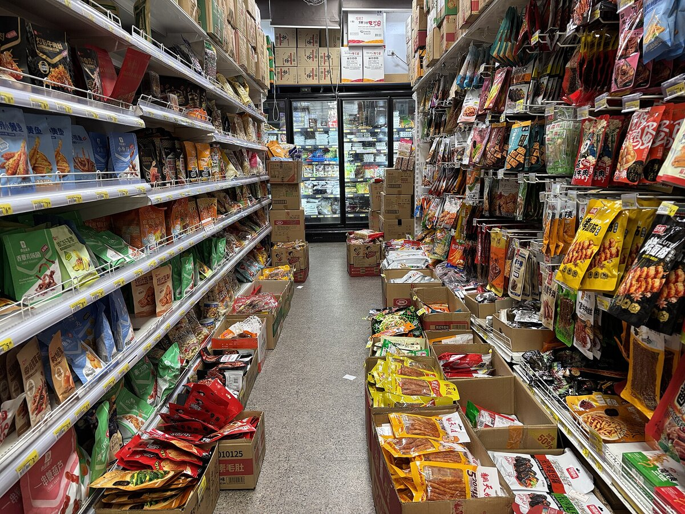

B1 · Everyday Life
Saturday in Austin
One ordinary weekend morning, and the phrasal verbs Americans use for everything in it.
Play the audio and follow along, then read it again on your own. Tap or hover over a highlighted word to see what it means.
Mike woke up before his alarm on Saturday, which almost never happens, and lay there for a minute working out whether he could get the shopping done before the heat set in. In Austin in August you do the outdoor part of your day early or you do not do it at all.
He rolled out of bed, stretched, and put the coffee on. While it brewed he caught up on the news on his phone, which he had been meaning to stop doing first thing, and then gave up on making anything and just munched on a granola bar standing at the counter.
The kitchen needed dealing with first. There were dishes in the sink from Thursday — he had been telling himself he would get around to them for two days, which is how dishes work — so he did them, cleared out the sink, and wiped down the counters. Then he threw in a load of laundry, because if he did not start it now it would not be dry before evening. He would hang up the shirts and toss the rest in the dryer when it finished.
He got dressed: jeans, a light blue t-shirt, sneakers. He picked up his reusable bags, his keys, his wallet, and a water bottle, which in Texas is not optional. Then he headed out to the truck.
The drive was short. He took the quieter streets, past front gardens and a couple of kids on bikes, and pulled into the H-E-B parking lot, which was already filling up. He grabbed a cart and started in the produce section — avocados, tomatoes, cilantro, checking each one instead of just picking up whatever was in front. Then the meat counter, then dairy for cheese and eggs, then the middle aisles for chips, salsa and a jar of jelly he did not need. He also picked up a bottle of Texas wine, which people outside the state are always surprised by.
Halfway down the cereal aisle he ran into his neighbors and spent ten minutes catching up about the high school football season and a road closure that nobody could explain. At the checkout the cashier recognized him and they chatted while she scanned everything through.


Back at the apartment he unloaded the truck, put away the groceries, and thought about making guacamole with the avocados before they went over. The laundry buzzed. He hung up the shirts, tossed the rest in the dryer, and sat down.
That was the morning gone, and none of it was interesting, and he did not mind at all. The rest of it he could leave. He would vacuum up the living room and dust off the shelves at some point over the weekend, or he would not, and either way it would still be there on Monday. In the evening he would settle down in front of something undemanding, catch up on the emails he had been ignoring, and wind down early.
If you fall behind on this kind of thing, it is not worth worrying about. You catch up when you have a free morning, and if somebody offers to help out, you take them up on it.
Key Vocabulary
- to set in to begin and become established, said of weather or a condition
- to roll out of bed to get up, without much energy
- to catch up on to do something you have fallen behind with
- to munch on to eat something steadily and casually
- to get around to to finally do something you have been putting off
- to clear out to empty something completely
- to wipe down to clean a surface with a cloth
- to throw in a load to start a batch of washing
- to hang up to put clothes on a line or hanger to dry
- to toss to throw something casually
- to pick up to collect or buy something
- to head out to leave for somewhere
- to pull into to drive in and stop
- produce fresh fruit and vegetables, as a section of a store
- to run into to meet someone unexpectedly
- to put away to store things in their proper places
- to go over to become too ripe or spoil
- to vacuum up to clean a floor with a vacuum cleaner
- to dust off to remove dust from a surface
- to settle down to get comfortable for a quiet period
- to wind down to relax gradually at the end of the day
- to fall behind to fail to keep up with what needs doing
- to help out to give someone assistance
- to take someone up on something to accept an offer someone has made
Saturday in Austin — B1 · Everyday Life · Renan the Teacher, English Language Academy · https://renangrossi.github.io/englishclasses/reading/b1/common-chores.html
Interactive Exercises
Practice
Complete each exercise, then click Submit to see your score and an explanation for every answer.
Speaking & Writing
Discussion
There are no right answers here — use these to practice speaking, or write a short answer to each.
- “I'll get around to it” — what is on your list that has been there longest?
- Mike does the outdoor part of his day early because of the heat. How does the climate where you live shape an ordinary day?
- The text ends by saying it is not worth worrying about falling behind. Do you agree, or does that just make it worse?
- Describe your own Saturday morning using at least eight phrasal verbs from this text.
- Write about 150 words about an ordinary day that you would not change.